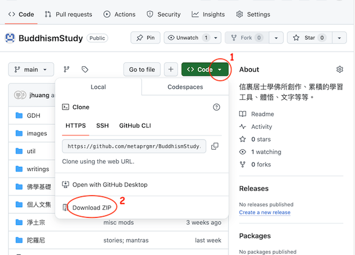

|
本網站是全開源，公布在GitHub上。（GitHub是開源代碼的公開存儲網站，上有各色人等種種內容。通常是程序員或公司團體發布其開源代碼，但越來越多各類信息亦貯於上，例如本網站的原始資料。）
如果你不熟悉git，最簡單的方法是下載所有內容的一個ZIP包。

但是下載ZIP包不是最佳方法。因為本網站東西畢竟不少，且新內容不斷增加，還有不間斷的修補、改正、注釋等。所以最好還是用git工具，方便維護你的本地版本與此GitHub版本一致。具體步驟如下：
- 安裝免費git軟件：https://git-scm.com/downloads
- 打開一個DOS或者console窗口，鍵入指令：
% git 看git軟件安裝是否成功。
- 在DOS或者console窗口，鍵入如此指令：
% git clone https://github.com/metaprgmr/BuddhismStudy.git
git應該在當地建立一個 BuddhismStudy/ 子目錄，內涵所有內容。
- 未來若要抓取最新內容，在目錄
BuddhismStudy/ 下，運行這條指令即可： % git pull
|